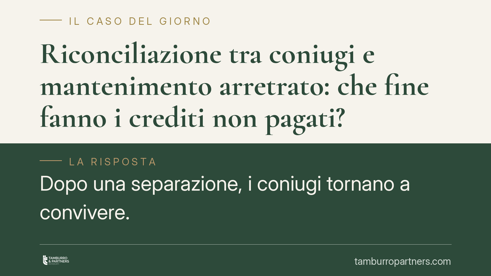

Riconciliazione tra coniugi e mantenimento arretrato: che fine fanno i crediti non pagati?
Dopo una separazione, i coniugi tornano a convivere. Che fine fanno i ratei di mantenimento mai versati? Una recente pronuncia di merito ha negato il recupero degli arretrati, valorizzando la ripresa effettiva della vita comune. La questione, però, non è pacifica: la distinzione tra crediti già maturati e obblighi futuri resta centrale e merita attenzione.

Il caso
Due coniugi separati riprendono la convivenza. Si ricostituisce il ménage familiare: stessa casa, gestione comune delle spese, riorganizzazione della vita quotidiana. A distanza di tempo, il coniuge che in sede di separazione era risultato creditore del mantenimento agisce per recuperare i ratei mai versati dall'altro.
Una pronuncia di merito ha respinto la domanda. Secondo questa lettura, la riconciliazione con ripresa effettiva della convivenza avrebbe fatto venire meno anche il diritto a incassare gli arretrati, con applicazione del principio della cosiddetta soccombenza virtuale sulle spese.
È una posizione che va inquadrata con precisione, perché tocca un punto tutt'altro che consolidato.
Inquadramento normativo
Il riferimento è l'art. 157 cod. civ., che disciplina la cessazione degli effetti della separazione. La norma stabilisce che i coniugi possono far cessare gli effetti della separazione senza bisogno di un intervento del giudice, con una espressa dichiarazione o con un comportamento non equivoco incompatibile con lo stato di separazione.
In altri termini, la riconciliazione può avvenire anche per fatti concludenti: la ripresa stabile della convivenza, se effettiva e non occasionale, è il tipico comportamento idoneo a produrre questo effetto. Da quel momento, gli obblighi derivanti dalla separazione — tra cui il mantenimento — cessano di operare *per il futuro*.
Il punto delicato riguarda il passato. La giurisprudenza distingue con nettezza tra:
- ratei già scaduti e non pagati prima della riconciliazione: costituiscono, in via generale, crediti autonomi già entrati nel patrimonio del coniuge creditore e non si estinguono automaticamente per effetto della ripresa della convivenza;
- obblighi futuri: questi sì cessano con la riconciliazione, perché viene meno il presupposto stesso dell'obbligazione.
La pronuncia qui esaminata adotta una lettura più estesa, che incide anche sugli arretrati. Si tratta di un orientamento di merito non pacifico e privo, allo stato, di un indirizzo di legittimità univoco che lo avalli in termini generali. Va dunque considerato per quello che è: una decisione sul singolo caso, non un principio applicabile a tappeto.
La soccombenza virtuale
La decisione richiama la soccombenza virtuale, istituto collegato all'art. 91 c.p.c. Si tratta del criterio con cui il giudice, quando il processo si chiude senza una decisione nel merito — ad esempio per cessazione della materia del contendere — ripartisce comunque le spese valutando *chi avrebbe avuto torto* se la causa fosse proseguita.
In pratica: anche quando non si arriva a una sentenza che accoglie o respinge la domanda, le spese non vengono necessariamente compensate. Il giudice ricostruisce l'esito probabile e le addossa alla parte che, con ogni verosimiglianza, sarebbe risultata perdente.
Implicazioni pratiche
Per il coniuge creditore la pronuncia è un segnale di cautela. Chi intende recuperare mantenimenti arretrati dopo una fase di riavvicinamento deve mettere in conto che l'avvenuta riconciliazione possa essere eccepita dall'altra parte, con esiti incerti sugli arretrati e un rischio concreto sulle spese di lite.
Per il coniuge debitore la riconciliazione può costituire un argomento difensivo, ma non una garanzia: l'esito dipende dalla prova concreta della ripresa effettiva della convivenza e dalla natura dei ratei contestati (scaduti prima o maturati dopo).
Resta fermo un dato di metodo: una pronuncia di merito non è "legge uguale per tutti i casi". Orienta, non vincola altri giudici. Su una materia dove la giurisprudenza non ha ancora un assetto stabile, la soluzione dipende in larga misura dai fatti concreti e dalla loro dimostrazione.
Cosa fare in concreto
- Documentare con precisione date e importi dei ratei non versati, distinguendo quelli maturati prima della ripresa della convivenza da quelli successivi.
- Ricostruire il momento esatto e le modalità dell'eventuale riconciliazione: residenza, spese comuni, testimoni, comunicazioni.
- Valutare la natura del credito prima di avviare un recupero: gli arretrati scaduti hanno una collocazione diversa dagli obblighi futuri.
- Considerare il rischio spese alla luce della soccombenza virtuale prima di promuovere o resistere a un giudizio.
È opportuna una valutazione tecnica caso per caso, perché su questo tema la posizione corretta cambia a seconda delle circostanze concrete.
---
*Contributo informativo a cura di Tamburro & Partners — Avv. Giuseppe Tamburro. Non costituisce parere legale.*
Ogni famiglia ha il suo equilibrio.
Separazione, divorzio, affidamento, assegno: se vuoi un confronto riservato su una specifica situazione, scrivi allo studio. Ti rispondiamo entro un giorno lavorativo.